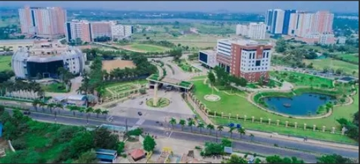
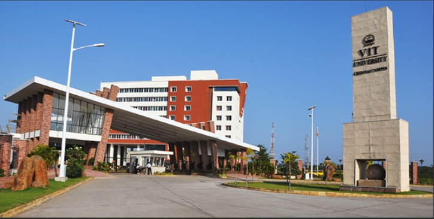
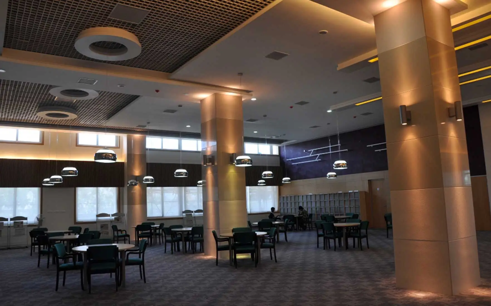

Morning briefing: Placements, research, and upcoming fests
Placement drive momentum continues with new recruiter lineup
Campus placements enter the final phase with a strong slate of tech, consulting, and core engineering firms. Pre-placement talks emphasize skills, projects, and internships aligned to industry roles.

By Campus Desk • • 6 min read
Moderate
Recruiters: This year’s placement drive has attracted a diverse mix of global and domestic companies
spanning software development, data analytics, consulting, and core manufacturing. Leading firms such as Microsoft,
Infosys, Tata Consultancy Services, and Bosch have already conducted interviews, with several more scheduled in the
coming weeks. The breadth of opportunities reflects the strong reputation of VIT Chennai graduates in multiple domains.
Workshops: To prepare students for these opportunities, the Career Development Cell has organized
intensive resume-building labs, mock interview sessions, and aptitude training modules. Industry experts and alumni
mentors are actively involved, offering personalized feedback and sharing insider tips on how to stand out in competitive
recruitment processes.
Projects: Final-year students are showcasing their capstone projects next week, covering areas such as
artificial intelligence, sustainable energy systems, robotics, and fintech solutions. These projects not only demonstrate
technical expertise but also highlight innovation and problem-solving skills. Selected teams will present their work to
recruiters and faculty panels, with the best projects being nominated for incubation support.
Campus Initiatives: Beyond placements, the institution has launched new initiatives including a
“Start-up Incubation Challenge” and a “Research Scholars Forum.” These platforms encourage entrepreneurial thinking and
cross-disciplinary collaboration, ensuring students graduate with both academic knowledge and practical exposure.
Student Achievements: Several students have recently won national-level hackathons and secured patents
for innovative designs. These achievements are being celebrated across campus and serve as inspiration for peers preparing
for their own career journeys.

Library launches digital archives and citation tools
Expanded journal access and integrated citation managers streamline literature reviews for projects and theses.
“Research workflows feel seamless now,” said a grad student.
.webp)